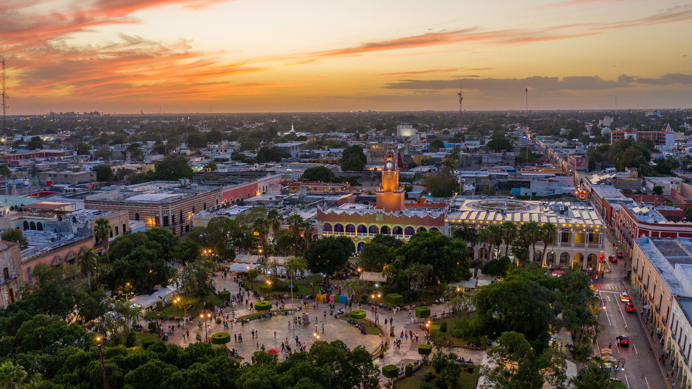
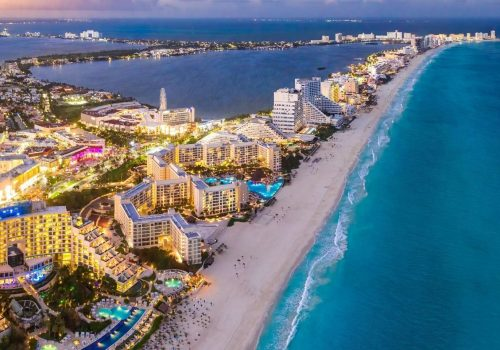
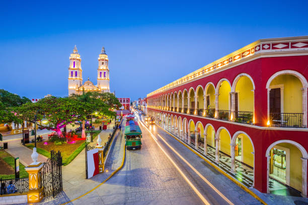

El estado de Yucatán es conocido por ser parte del corazón de la civilización maya,
con múltiples sitios arqueológicos que datan de siglos antes de la
llegada de los conquistadores españoles. La capital del estado es Mérida,
la cual fue fundada en 1542 por el explorador español Francisco de
Montejo. Fue durante el siglo XIX que Yucatán experimentó un auge
económico gracias a la producción de henequén, conocido como “oro
verde”.

Quintana Roo fue uno de los últimos territorios en ser incorporado como estado de la federación mexicana en 1974. Antes de eso, era un territorio dependiente. Tiene una rica herencia maya, con zonas arqueológicas como Cobá y Tulum, esta última conocida por su ubicación costera en el Mar Caribe.

Descubre más sobre Quitana Roo
En el caso de Campeche, jsutamente como Yucatán, tiene profundas raíces en la civilización maya, con sitios importantes como Calakmul,
una de las mayores ciudades mayas antiguas. Fundada en 1540 por los
españoles, la ciudad de Campeche fue un importante puerto colonial y su
muralla fue construida para defenderse de ataques piratas.
La ciudad amurallada de Campeche es Patrimonio de la Humanidad y
conserva muchos de sus edificios coloniales. El estado también tiene
una rica biodiversidad en la Reserva de la Biósfera de Los Petenes y un
importante sector pesquero y agrícola.

Descubre más sobre Campeche
Descubre la relacion que comparten:
RELACIÓN